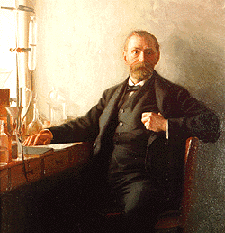
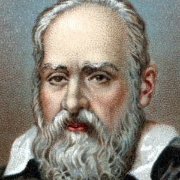

| Picture |
Name |
DOB and DOD |
Discoveries, Theories, or Inventions |
Accolades |
Field of study |
Influencers |
Bio |
 |
Sir Isaac Newton |
1642-1726 |
Calculus |
Knighthood |
Mathematics, Physics, Astronomy |
Johannes Kepler |
Born in Woolsthorpe, England. Studied at University of Cambridge. |
 |
Charles Darwin |
1809-1882 |
Theory of Evolution |
Royal medal |
Biology |
John Herschel |
Born in Shrewsbury, England. Studied at Cambridge. |
 |
Albert Einstein |
1879-1955 |
Theory of Relativity |
Nobel Prize in Physics. |
Physics |
Alfred Kleiner |
Born in Ulm, Germany. Studied at University of Zurich. |
|  |
Alfred Nobel |
1833-1896 |
Dynamite |
The Monument to Alfred Nobel. |
Chemistry |
Immanuel Nobel |
Born in Stockholm, Sweden. Studied with Nikolai Zinin. |
 |
Alan Turing |
1912-1954 |
Turing Test |
Smith's Prize. Fellow of the Royal Society. |
Computer Science |
Alonzo Church. |
Born in London, England. Studied at King's College, Cambridge. |
|  |
Galileo |
1564-1642 |
Telescope. Heliocentric solarsystem. |
Honorary degree from Jesuit college in Rome. |
Astronomy |
Johannes Kepler. Nicolaus Copernicus. |
Born in Pisa, Italy. Studied at University of Pisa. |